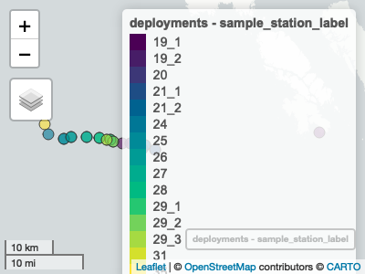
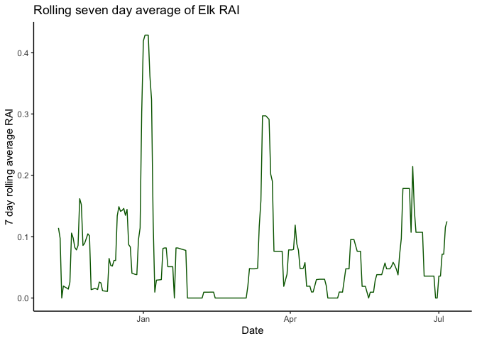
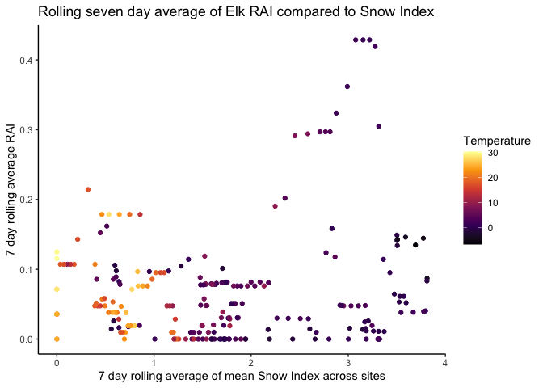
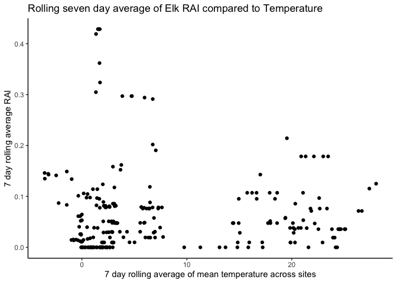
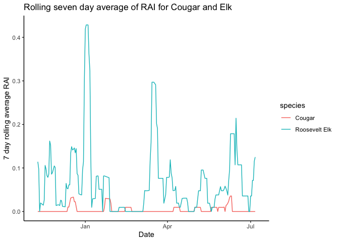
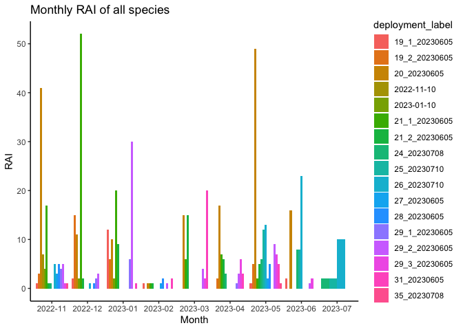

Functions for QA and validation of Camera Trap data
Installation
You can install the development version of bccamtrap from GitHub using the devtools package (you may need to install it first):
# install.packages("devtools")
devtools::install_github("bcgov/bccamtrap")Example Usage
This package is being developed for camera trap studies in the West Coast Region, BC Ministry of Water, Land, and Resource Stewardship (WLRS).
The functions in this package currently assume your project and session-level data are stored in a BC Government Wildlife Data Submission Template for Camera Trap Data, augmented with additional fields.
The image data is expected to be in multiple csv files, in one folder per project. The csv files have been generated by reviewing the images in TimeLapse software, using the template v20230518.
Note that example data has been obfuscated to protect the location of the projects.
To begin, set the paths to the project metadata file, and the folder containing the TimeLapse image files:
library(bccamtrap)
metadata_path <- "~/data/project-files/project_1_RISC_WCR_Database_Template_v20230518.xlsm"
data_path <- "~/data/wc-wlrs-cam-data/camera-data/project_1/"Project and station metadata
Read in project metadata from the SPI worksheet. There are functions to read the relevant tabs:
Project Information
proj <- read_project_info(metadata_path)
proj
#> # A tibble: 1 × 4
#> spi_project_id project_name survey_name survey_intensity_code
#> * <chr> <chr> <chr> <chr>
#> 1 <NA> 2022 - ongoing - Roosevelt E… 2022-2023 … <NA>Sample station information
Read the sample station information. This creates a spatial data frame of class "sf", from the sf package. This format allows us to work with it as a regular data frame, but also do spatial things with it.
sample_stations <- read_sample_station_info(metadata_path)
sample_stations#> Simple feature collection with 21 features and 29 fields
#> Geometry type: POINT
#> Dimension: XY
#> Bounding box: xmin: -125.8534 ymin: 53.6787 xmax: -125.0136 ymax: 53.73782
#> Geodetic CRS: WGS 84
#> # A tibble: 21 × 24
#> wlrs_project_name study_area_name study_area_photos sample_station_label
#> <chr> <chr> <chr> <chr>
#> 1 2022 - ongoing - Roos… Test Project Y 19_1
#> 2 2022 - ongoing - Roos… Test Project Y 19_2
#> 3 2022 - ongoing - Roos… Test Project Y 20
#> 4 2022 - ongoing - Roos… Test Project Y 21_1
#> 5 2022 - ongoing - Roos… Test Project Y 21_2
#> 6 2022 - ongoing - Roos… Test Project Y 24
#> 7 2022 - ongoing - Roos… Test Project Y 25
#> 8 2022 - ongoing - Roos… Test Project Y 26
#> 9 2022 - ongoing - Roos… Test Project Y 27
#> 10 2022 - ongoing - Roos… Test Project Y 28
#> # ℹ 11 more rows
#> # ℹ 20 more variables: station_status <chr>, number_of_cameras <dbl>,
#> # set_date <dttm>, general_location <chr>, elevation_m <dbl>,
#> # slope_percent <dbl>, aspect_degrees <dbl>, crown_closure_percent <dbl>,
#> # camera_bearing_degrees <dbl>, camera_height_cm <dbl>,
#> # distance_to_feature_m <dbl>, visible_range_m <dbl>, habitat_feature <chr>,
#> # lock <chr>, code <chr>, sample_station_comments <chr>, …Use the qa_stations_spatial() function to run some basic spatial validation on the data - namely checking for spatial outliers:
sample_stations <- qa_stations_spatial(sample_stations)
#> ! Station 19_1 appears to be very far away from other stations. Please check
#> its coordinates.Use the summary() method for Sample Station Info for basic descriptive stats:
summary(sample_stations)
#> ┌ Test Project ───────┐
#> │ │
#> │ Sample Stations │
#> │ │
#> └─────────────────────┘
#> ℹ 18 sample stations in 21 locations.
#> ℹ Summary of station distances (m):
#> Min. 1st Qu. Median Mean 3rd Qu. Max.
#> 5.08 4247.81 8712.00 11935.96 14562.39 55516.29
#> ✖ Detected 1 potential spatial outlier.
#> ℹ Station status summary:
#> Camera Active Camera Moved
#> 18 3
#> ℹ Set dates: Between 2022-11-07 and 2023-11-16
#> ! Run `map_stations(object)` to view stations on a map.Use the map_stations() function to create an interactive map the of the stations. This will show any potential outlying stations, indicating possible data errors:
map_stations(sample_stations)
Camera Information:
Read camera information using read_camera_info():
camera_info <- read_camera_info(metadata_path)
camera_info#> Simple feature collection with 21 features and 14 fields
#> Geometry type: POINT
#> Dimension: XY
#> Bounding box: xmin: -125.5219 ymin: 49.28703 xmax: -125.2213 ymax: 49.34728
#> Geodetic CRS: WGS 84
#> # A tibble: 21 × 9
#> wlrs_project_name study_area_name parent_sample_statio…¹ camera_label
#> <chr> <chr> <chr> <chr>
#> 1 2022 - ongoing - Rooseve… Test Project 19_1 UBC 2
#> 2 2022 - ongoing - Rooseve… Test Project 19_2 UBC 1
#> 3 2022 - ongoing - Rooseve… Test Project 20 Eco1059
#> 4 2022 - ongoing - Rooseve… Test Project 21_1 Eco1057
#> 5 2022 - ongoing - Rooseve… Test Project 21_2 Eco7998
#> 6 2022 - ongoing - Rooseve… Test Project 24 Eco1050
#> 7 2022 - ongoing - Rooseve… Test Project 25 Eco1040
#> 8 2022 - ongoing - Rooseve… Test Project 26 Eco7939
#> 9 2022 - ongoing - Rooseve… Test Project 27 Eco6690
#> 10 2022 - ongoing - Rooseve… Test Project 28 UBC 4
#> # ℹ 11 more rows
#> # ℹ abbreviated name: ¹parent_sample_station_label
#> # ℹ 5 more variables: make_of_camera_code <chr>, model_of_camera <chr>,
#> # camera_comments <chr>, site_description_comments <chr>,
#> # site_description_date <dttm>Camera Setup and Checks:
camera_setup_checks <- read_cam_setup_checks(metadata_path)
camera_setup_checks#> # A tibble: 43 × 31
#> wlrs_project_name study_area_name sample_station_label deployment_label
#> <chr> <chr> <chr> <chr>
#> 1 2022 - ongoing - Roose… Test Project 19_1 <NA>
#> 2 2022 - ongoing - Roose… Test Project 19_2 <NA>
#> 3 2022 - ongoing - Roose… Test Project 20 <NA>
#> 4 2022 - ongoing - Roose… Test Project 21_1 <NA>
#> 5 2022 - ongoing - Roose… Test Project 21_2 <NA>
#> 6 2022 - ongoing - Roose… Test Project 24 <NA>
#> 7 2022 - ongoing - Roose… Test Project 25 <NA>
#> 8 2022 - ongoing - Roose… Test Project 26 <NA>
#> 9 2022 - ongoing - Roose… Test Project 27 <NA>
#> 10 2022 - ongoing - Roose… Test Project 28 <NA>
#> # ℹ 33 more rows
#> # ℹ 27 more variables: camera_label <chr>, surveyors <chr>,
#> # date_time_checked <dttm>, sampling_start <dttm>, sampling_end <dttm>,
#> # total_visit_or_deployment_time <dbl>, unit_of_total_time_code <chr>,
#> # visit_type <chr>, camera_status_on_arrival <chr>, battery_level <chr>,
#> # batteries_changed <chr>, number_of_photos <dbl>, quiet_period_s <chr>,
#> # trigger_sensitivity <chr>, trigger_timing_s <dbl>, …Deployments
Rather than just looking at the raw camera setup and checks or stations, there is more utility in assembling sampling deployments by combining the sample station information and the camera setup and checks. Do this with the make_deployments() function.
deployments <- make_deployments(metadata_path)
deployments#> Simple feature collection with 28 features and 62 fields
#> Geometry type: POINT
#> Dimension: XY
#> Bounding box: xmin: -130.3966 ymin: 52.92087 xmax: -129.569 ymax: 52.96732
#> Geodetic CRS: WGS 84
#> # A tibble: 28 × 57
#> wlrs_project_name study_area_name sample_station_label deployment_label
#> <chr> <chr> <chr> <chr>
#> 1 2022 - ongoing - Roose… Test Project 19_1 19_1_20230605
#> 2 2022 - ongoing - Roose… Test Project 19_2 19_2_20230605
#> 3 2022 - ongoing - Roose… Test Project 20 20_20230605
#> 4 2022 - ongoing - Roose… Test Project 21_1 21_20230605
#> 5 2022 - ongoing - Roose… Test Project 21_2 21_2_20230605
#> 6 2022 - ongoing - Roose… Test Project 24 24_20230708
#> 7 2022 - ongoing - Roose… Test Project 25 25_20230710
#> 8 2022 - ongoing - Roose… Test Project 26 26_20230710
#> 9 2022 - ongoing - Roose… Test Project 27 27_20230605
#> 10 2022 - ongoing - Roose… Test Project 28 28_20230605
#> # ℹ 18 more rows
#> # ℹ 53 more variables: camera_label <chr>, surveyors <chr>,
#> # date_time_checked <dttm>, sampling_end <dttm>,
#> # total_visit_or_deployment_time <dbl>, unit_of_total_time_code <chr>,
#> # visit_type <chr>, camera_status_on_arrival <chr>, battery_level <chr>,
#> # batteries_changed <chr>, number_of_photos <dbl>, quiet_period_s <chr>,
#> # trigger_sensitivity <chr>, trigger_timing_s <dbl>, …There is a handy summary() method for this as well:
summary(deployments)
#> ┌ Test Project ───┐
#> │ │
#> │ Deployments │
#> │ │
#> └─────────────────┘
#> ℹ 15 sample stations in 28 deploymentss.
#> ℹ Deployment lengths range between 113 and 245 days.
#> ℹ Camera status on arrival summary:
#> Active
#> 28
#> ℹ There are 19201 images. Photos per deployment range betwen 189 and 3554.We can use the mapview package to quickly visualize this, setting the zcol argument to the name of the column you’d like to colour the points by. Clicking on a point will give you the details of that deployment.

Project Metadata: Field Form CSV files
There are also two functions for reading in the different csv outputs from the field forms: Sample Stations, and Deployments:
sample_station_info <- read_sample_station_csv("path-to-sample-stations.csv")
deployments <- read_deployments_csv("path-to-deployments.csv")Image data
We can read in an entire directory of image data from multiple csv files, as long as they all follow the same TimeLapse template. Currently it is expected that they follow the v20230518 template.
image_data <- read_image_data(data_path)
image_data#> # A tibble: 11,833 × 43
#> root_folder study_area_name sample_station_label deployment_label
#> <chr> <chr> <chr> <chr>
#> 1 100RECNX Test Project 19_1 19_1_20230605
#> 2 100RECNX Test Project 19_1 19_1_20230605
#> 3 100RECNX Test Project 19_1 19_1_20230605
#> 4 100RECNX Test Project 19_1 19_1_20230605
#> 5 100RECNX Test Project 19_1 19_1_20230605
#> 6 100RECNX Test Project 19_1 19_1_20230605
#> 7 100RECNX Test Project 19_1 19_1_20230605
#> 8 100RECNX Test Project 19_1 19_1_20230605
#> 9 100RECNX Test Project 19_1 19_1_20230605
#> 10 100RECNX Test Project 19_1 19_1_20230605
#> # ℹ 11,823 more rows
#> # ℹ 39 more variables: date_time <dttm>, episode <chr>, species <chr>,
#> # total_count_episode <dbl>, obj_count_image <int>, adult_male <int>,
#> # adult_female <int>, adult_unclassified_sex <int>, yearling_male <int>,
#> # yearling_female <int>, yearling_unclassified_sex <int>,
#> # young_of_year_unclassified_sex <int>, juvenile_unclassified_sex <int>,
#> # male_unclassified_age <int>, female_unclassified_age <int>, …Again, we can use the summary() method to get an overview of the image data.
summary(image_data)
#> ┌ Test Project ─────┐
#> │ │
#> │ Image summary │
#> │ │
#> └───────────────────┘
#> ℹ 11833 images in 17 deployments at 15 sample stations.
#> ℹ Image counts by trigger mode:
#> Motion Detection Time Lapse
#> 8657 3176
#> ℹ 117 images with lens obscured.
#> ℹ 4 images starred.
#> ! 4 images flagged for review.
#> ℹ Dates are between 2022-11-07 and 2023-07-10.
#> ℹ Temperatures are between -10 and 37 C.
#> ℹ Snow depths are between 0 and 135 cm.
#> ℹ Species counts:
#> Avian (comments) Black Bear Cougar Mule Deer
#> 6 130 12 155
#> Other (comments) Pacific Marten Red Squirrel Roosevelt Elk
#> 1 2 1 88
#> <NA>
#> 11438
#> ! Run `qa_deployment_images()` to crosscheck images with deployments.
#> ! Run `qa_image_data()` to run various QA checks.Use the qa_deployment_images() function to find deployment labels that are in the deployment data but not in the image data, and vice-versa. It is usually likely that there will be deployment labels in the deployment data that are missing from the image data if not all of the images have been processed yet. Deployment labels that are present in the image data but not in the deployment data indicate a potential problem.
qa_deployment_images(deployments, image_data)
#> ! The following deployment labels are present in `image_data` but not `deployments`: "21_1_20230605", "2022-11-10", and "2023-01-10"
#> ! The following deployment labels are present in `deployments` but not `image_data`: "21_20230605", "19_1_20231107", "19_2_20231107", "20_20231107", "21_20231107", "21_2_20231108", "25_20231031", "26_20231031", "27_20231031", "28_20231031", "29_1_20231031", "29_2_20231031", "29_3_20231107", and "31_20231107"Use merge_deployments_images() to join the deployment metadata to the images:
images_with_metadata <- merge_deployments_images(deployments, image_data)
#> ! The following deployment labels are present in `image_data` but not `deployments`: "21_1_20230605", "2022-11-10", and "2023-01-10"
#> ! The following deployment labels are present in `deployments` but not `image_data`: "21_20230605", "19_1_20231107", "19_2_20231107", "20_20231107", "21_20231107", "21_2_20231108", "25_20231031", "26_20231031", "27_20231031", "28_20231031", "29_1_20231031", "29_2_20231031", "29_3_20231107", and "31_20231107"
images_with_metadata
#> Simple feature collection with 11833 features and 102 fields (with 1208 geometries empty)
#> Geometry type: POINT
#> Dimension: XY
#> Bounding box: xmin: -130.3966 ymin: 52.92237 xmax: -129.569 ymax: 52.96732
#> Geodetic CRS: WGS 84
#> # A tibble: 11,833 × 97
#> root_folder deployment_label date_time episode species
#> <chr> <chr> <dttm> <chr> <chr>
#> 1 100RECNX 19_1_20230605 2022-11-10 15:15:53 1:1|5 <NA>
#> 2 100RECNX 19_1_20230605 2022-11-10 15:15:58 1:2|5 <NA>
#> 3 100RECNX 19_1_20230605 2022-11-10 15:16:25 1:3|5 <NA>
#> 4 100RECNX 19_1_20230605 2022-11-10 15:16:27 1:4|5 <NA>
#> 5 100RECNX 19_1_20230605 2022-11-10 15:16:31 1:5|5 <NA>
#> 6 100RECNX 19_1_20230605 2022-11-11 12:00:00 2:1|1 <NA>
#> 7 100RECNX 19_1_20230605 2022-11-12 12:00:00 3:1|1 <NA>
#> 8 100RECNX 19_1_20230605 2022-11-13 12:00:00 4:1|1 <NA>
#> 9 100RECNX 19_1_20230605 2022-11-14 12:00:00 5:1|1 <NA>
#> 10 100RECNX 19_1_20230605 2022-11-15 12:00:00 6:1|1 <NA>
#> # ℹ 11,823 more rows
#> # ℹ 92 more variables: total_count_episode <dbl>, obj_count_image <int>,
#> # adult_male <int>, adult_female <int>, adult_unclassified_sex <int>,
#> # yearling_male <int>, yearling_female <int>,
#> # yearling_unclassified_sex <int>, young_of_year_unclassified_sex <int>,
#> # juvenile_unclassified_sex <int>, male_unclassified_age <int>,
#> # female_unclassified_age <int>, unclassified_life_stage_and_sex <int>, …Image Data QA
There are a number of common data quality issues that we can check for in the image data itself, aside from those addressed above when reconciling deployments and images.
We can use the qa_image_data() function to detect the following problems:
- Check for blanks in key fields: study area, station label, deployment date, surveyor, trigger mode, temperature, episode
- Species detected with no count data
- Count data with no species
- Sum of individual count fields equals Total Count
- Multiple entries under same Episode number (indicating possible double entry)
- Ensure dates for timelapse images are continuous and in order.
- Snow data
- No blanks unless lens obscured is
TRUE - Look for snow depth outliers (e.g., 10, 10, 110, 10, 15, 20)
- No blanks unless lens obscured is
Run the qa_image_data() function:
image_data_qa <- qa_image_data(image_data)
dim(image_data_qa)
#> [1] 24 55We can see that this has identified 24 records with potential problems. This dataset has a number of fields starting with QA_ which help us know which images we should have a closer look at. All of the original fields, plus any QA_ fields that have at least one TRUE value are returned:
names(image_data_qa)
#> [1] "root_folder" "study_area_name"
#> [3] "sample_station_label" "deployment_label"
#> [5] "date_time" "episode_num"
#> [7] "episode" "species"
#> [9] "total_count_episode" "obj_count_image"
#> [11] "adult_male" "adult_female"
#> [13] "adult_unclassified_sex" "yearling_male"
#> [15] "yearling_female" "yearling_unclassified_sex"
#> [17] "young_of_year_unclassified_sex" "juvenile_unclassified_sex"
#> [19] "male_unclassified_age" "female_unclassified_age"
#> [21] "unclassified_life_stage_and_sex" "antler_class"
#> [23] "animal_identifiable" "animal_tagged"
#> [25] "behaviour_1" "behaviour_2"
#> [27] "behaviour_3" "human_use_type"
#> [29] "human_transport_mode" "temperature"
#> [31] "snow_depth" "snow_index"
#> [33] "snow_is_est" "snow_depth_lower"
#> [35] "snow_depth_upper" "lens_obscured"
#> [37] "starred" "needs_review"
#> [39] "comment" "surveyor"
#> [41] "trigger_mode" "file"
#> [43] "relative_path" "delete_flag"
#> [45] "QA_BLANK_study_area_name" "QA_BLANK_sample_station_label"
#> [47] "QA_BLANK_deployment_label" "QA_BLANK_date_time"
#> [49] "QA_BLANK_surveyor" "QA_BLANK_trigger_mode"
#> [51] "QA_BLANK_temperature" "QA_BLANK_episode"
#> [53] "QA_timelapse_lag" "QA_wrong_tl_time"
#> [55] "QA_snow_outlier"
select(image_data_qa, root_folder, file, starts_with("QA_"))
#> # A tibble: 24 × 13
#> root_folder file QA_BLANK_study_area_name QA_BLANK_sample_station…¹
#> <chr> <chr> <lgl> <lgl>
#> 1 27_20230605 RCNX0030.JPG FALSE FALSE
#> 2 100RECNX RCNX0114.JPG FALSE FALSE
#> 3 100RECNX RCNX0118.JPG FALSE FALSE
#> 4 21_2_20230605 RCNX0010.JPG FALSE FALSE
#> 5 100RECNX RCNX0261.JPG FALSE FALSE
#> 6 100RECNX RCNX0339.JPG FALSE FALSE
#> 7 100RECNX RCNX0376.JPG FALSE FALSE
#> 8 29_2_20230605 IMG_0252.JPG FALSE FALSE
#> 9 100RECNX IMG_0134.JPG FALSE FALSE
#> 10 102RECNX RCNX0041.JPG FALSE FALSE
#> # ℹ 14 more rows
#> # ℹ abbreviated name: ¹QA_BLANK_sample_station_label
#> # ℹ 9 more variables: QA_BLANK_deployment_label <lgl>,
#> # QA_BLANK_date_time <lgl>, QA_BLANK_surveyor <lgl>,
#> # QA_BLANK_trigger_mode <lgl>, QA_BLANK_temperature <lgl>,
#> # QA_BLANK_episode <lgl>, QA_timelapse_lag <lgl>, QA_wrong_tl_time <lgl>,
#> # QA_snow_outlier <lgl>Built-in plotting functions
There are several plotting functions available to help you visualize your data and spot any potential problems. By default, all plots render as static images, but can be created as interactive plots by setting interactive = TRUE. Interactive plots are not shown here as they don’t render in the README.
Deployment plot
We can plot deployments to see that the start and ends of our deployments are as expected, and flag any “invalid” deployments (i.e., where we don’t know the end time because a camera was stolen, bumped, ran out of batteries etc.). You can make static or interactive plots:
plot_deployments(deployments, date_breaks = "2 months")
# plot_deployments(deployments, interactive = TRUE, date_breaks = "2 months")Snow depth plot
We can plot the recorded snow depths across deployments using the plot_snow() function with our image data:
plot_snow(image_data, date_breaks = "2 months")
#> Warning: Removed 109 rows containing missing values or values outside the scale range
#> (`geom_interactive_point()`).
# plot_snow(image_data, date_breaks = "2 months", interactive = TRUE)Detection plot
We can also plot image timestamps over the deployment durations to alert us to potential time mismatches between the session data and image time labels. Mismatches could indicate wrong time settings on cameras, errors in deployment labels (as the below indicates), or any number of data entry errors.
plot_deployment_detections(deployments, image_data, date_breaks = "2 months")
# plot_deployment_detections(deployments, image_data, interactive = TRUE, date_breaks = "2 months")Daily detection patterns
We can plot the patterns of daily detections by species:
plot_diel_activity(image_data)
# plot_diel_activity(image_data, interactive = TRUE)Sampling sessions
Define sampling sessions based on image data using the make_sample_sessions() function. This function will:
- Set sampling_start as deployment_start
- Notes dates of first and last photos of deployment
- Counts photos (total, and motion-detection)
- Determines if the sampling period is less than the deployment period
- Determines gaps in sampling period due to obscured lens
- Determines total length of sample period (last photo date - first photo date - number of days with lens obscured)
make_sample_sessions(image_data)#> # A tibble: 17 × 13
#> deployment_label sample_start_date sample_end_date n_photos n_photos_spp_id
#> <chr> <date> <date> <int> <int>
#> 1 19_1_20230605 2022-11-10 2023-06-05 285 11
#> 2 19_2_20230605 2022-11-15 2023-06-05 411 26
#> 3 20_20230605 2022-11-10 2023-06-05 1857 101
#> 4 21_1_20230605 2022-11-10 2023-06-05 959 78
#> 5 21_2_20230605 2022-11-18 2023-06-05 569 23
#> 6 24_20230708 2022-11-18 2023-07-08 521 18
#> 7 25_20230710 2022-11-18 2023-07-10 3554 24
#> 8 26_20230710 2022-11-07 2023-07-10 621 50
#> 9 27_20230605 2022-11-07 2023-06-05 259 7
#> 10 28_20230605 2022-11-15 2023-06-05 566 14
#> 11 29_1_20230605 2022-11-07 2023-06-05 390 10
#> 12 2022-11-10 2022-11-07 2022-11-10 52 5
#> 13 29_2_20230605 2022-11-10 2023-06-05 530 34
#> 14 29_3_20230605 2022-11-18 2023-06-05 419 15
#> 15 2023-01-10 2022-11-15 2023-01-10 197 8
#> 16 31_20230605 2023-01-25 2023-06-05 382 15
#> 17 35_20230708 2022-11-18 2023-07-08 261 3
#> # ℹ 8 more variables: n_species <int>, n_individuals <dbl>,
#> # n_motion_photos <int>, n_motion_photos_lens_obscured <int>,
#> # n_tl_photos <int>, n_tl_photos_lens_obscured <int>, sample_gaps <lgl>,
#> # trap_days <int>You can set custom start and end dates for your sample session as well:
make_sample_sessions(
image_data,
sample_start_date = "2022-12-01",
sample_end_date = "2023-04-30"
)#> # A tibble: 16 × 13
#> deployment_label sample_start_date sample_end_date n_photos n_photos_spp_id
#> <chr> <date> <date> <int> <int>
#> 1 19_1_20230605 2022-12-01 2023-04-30 191 6
#> 2 19_2_20230605 2022-12-01 2023-04-30 290 16
#> 3 20_20230605 2022-12-01 2023-04-30 662 31
#> 4 21_1_20230605 2022-12-01 2023-04-30 684 62
#> 5 21_2_20230605 2022-12-01 2023-04-30 450 15
#> 6 24_20230708 2022-12-01 2023-04-30 166 3
#> 7 25_20230710 2022-12-01 2023-04-30 165 0
#> 8 26_20230710 2022-12-01 2023-04-30 163 1
#> 9 27_20230605 2022-12-01 2023-04-30 152 1
#> 10 28_20230605 2022-12-01 2023-04-30 162 3
#> 11 29_1_20230605 2022-12-01 2023-04-30 241 5
#> 12 29_2_20230605 2022-12-01 2023-04-30 415 18
#> 13 29_3_20230605 2022-12-01 2023-04-30 226 5
#> 14 2023-01-10 2022-12-01 2023-01-10 95 4
#> 15 31_20230605 2023-01-25 2023-04-30 311 8
#> 16 35_20230708 2022-12-01 2023-04-30 152 0
#> # ℹ 8 more variables: n_species <int>, n_individuals <dbl>,
#> # n_motion_photos <int>, n_motion_photos_lens_obscured <int>,
#> # n_tl_photos <int>, n_tl_photos_lens_obscured <int>, sample_gaps <lgl>,
#> # trap_days <int>Analysis data
Relative Abundance Index (RAI)
Calculate Relative Abundance Index for sample sessions using sample_rai(). By default, it calculates RAI per species using the sample start and end dates in the data for each deployment:
sample_rai(image_data)
#> # A tibble: 53 × 7
#> deployment_label sample_start_date sample_end_date trap_days species
#> <chr> <date> <date> <int> <chr>
#> 1 19_1_20230605 2022-11-10 2023-06-05 207 Black Bear
#> 2 19_1_20230605 2022-11-10 2023-06-05 207 Cougar
#> 3 19_1_20230605 2022-11-10 2023-06-05 207 Roosevelt Elk
#> 4 19_2_20230605 2022-11-15 2023-06-05 201 Black Bear
#> 5 19_2_20230605 2022-11-15 2023-06-05 201 Mule Deer
#> 6 19_2_20230605 2022-11-15 2023-06-05 201 Roosevelt Elk
#> 7 2022-11-10 2022-11-07 2022-11-10 3 Mule Deer
#> 8 2022-11-10 2022-11-07 2022-11-10 3 Roosevelt Elk
#> 9 2023-01-10 2022-11-15 2023-01-10 56 Cougar
#> 10 2023-01-10 2022-11-15 2023-01-10 56 Roosevelt Elk
#> # ℹ 43 more rows
#> # ℹ 2 more variables: total_count <dbl>, rai <dbl>You can set it to do a subset of species and/or deployment labels, and similar to make_sample_sessions(), set custom session start and end dates:
sample_rai(
image_data,
species = "Roosevelt Elk",
deployment_label = c("19_2_20230605", "29_1_20230605"),
sample_start_date = "2022-12-01",
sample_end_date = "2023-04-30"
)
#> # A tibble: 2 × 7
#> deployment_label sample_start_date sample_end_date trap_days species
#> <chr> <date> <date> <int> <chr>
#> 1 19_2_20230605 2022-12-01 2023-04-30 151 Roosevelt Elk
#> 2 29_1_20230605 2022-12-01 2023-04-30 148 Roosevelt Elk
#> # ℹ 2 more variables: total_count <dbl>, rai <dbl>You can also calculate RAI across all deployments by setting by_deployment = FALSE:
sample_rai(
image_data,
species = "Roosevelt Elk",
by_deployment = FALSE,
sample_start_date = "2022-12-01",
sample_end_date = "2023-04-30"
)
#> # A tibble: 1 × 6
#> sample_start_date sample_end_date trap_days species total_count rai
#> <date> <date> <int> <chr> <dbl> <dbl>
#> 1 2022-12-01 2023-04-30 151 Roosevelt Elk 146 0.967We can compare total count and RAI across species:
spp_comp <- sample_rai(
image_data,
by_deployment = FALSE,
by_species = TRUE,
sample_start_date = "2022-12-01",
sample_end_date = "2023-04-30"
)
spp_comp
#> # A tibble: 7 × 6
#> sample_start_date sample_end_date trap_days species total_count rai
#> <date> <date> <int> <chr> <dbl> <dbl>
#> 1 2022-12-01 2023-04-30 131 Avian (commen… 1 0.00763
#> 2 2022-12-01 2023-04-30 151 Black Bear 28 0.185
#> 3 2022-12-01 2023-04-30 151 Cougar 8 0.0530
#> 4 2022-12-01 2023-04-30 151 Mule Deer 105 0.695
#> 5 2022-12-01 2023-04-30 131 Other (commen… 1 0.00763
#> 6 2022-12-01 2023-04-30 151 Pacific Marten 2 0.0132
#> 7 2022-12-01 2023-04-30 151 Roosevelt Elk 146 0.967Using the ggplot2 package, we can plot this:
library(ggplot2)
ggplot(spp_comp, aes(x = rai, y = species)) +
geom_point(colour = "darkgreen") +
geom_text(aes(label = total_count), nudge_x = 0.05, nudge_y = 0.1) +
theme_classic() +
labs(title = "RAI of all species detected, across all deployments",
caption = "Numbers beside points represent total number of individuals detected",
x = "Relative Abundance Index", y = "Species")
We can group by deployment to compare across deployments:
spp_comp_by_dep <- sample_rai(
image_data,
by_deployment = TRUE,
by_species = TRUE,
sample_start_date = "2022-12-01",
sample_end_date = "2023-04-30"
)
ggplot(spp_comp_by_dep, aes(x = rai, y = species, colour = deployment_label)) +
geom_point() +
geom_text(aes(label = total_count), nudge_x = 0.01, nudge_y = 0.1) +
theme_classic() +
labs(title = "RAI of all species detected, across all deployments",
caption = "Numbers beside points represent total number of individuals detected",
x = "Relative Abundance Index", y = "Species")
Relative Abundance Index (RAI) over time
Use rai_by_time() to calculate RAI over a time window, optionally calculating statistics using a moving window aggregation. You can calculate daily statistics, or aggregate by week, month, or year. By default, it calculates daily metrics, aggregating across deployments.
rai_by_time(image_data)
#> # A tibble: 2,205 × 8
#> species study_area_name date max_snow_index mean_temperature
#> <chr> <chr> <date> <dbl> <dbl>
#> 1 Avian (comments) Test Project 2022-11-07 2 6
#> 2 Avian (comments) Test Project 2022-11-08 2 -1.75
#> 3 Avian (comments) Test Project 2022-11-09 2 -3.25
#> 4 Avian (comments) Test Project 2022-11-10 2 1.2
#> 5 Avian (comments) Test Project 2022-11-11 2 1
#> 6 Avian (comments) Test Project 2022-11-12 2 1.57
#> 7 Avian (comments) Test Project 2022-11-13 2 2.57
#> 8 Avian (comments) Test Project 2022-11-14 2 1.71
#> 9 Avian (comments) Test Project 2022-11-15 2 0.5
#> 10 Avian (comments) Test Project 2022-11-16 2 -1
#> # ℹ 2,195 more rows
#> # ℹ 3 more variables: total_count <dbl>, trap_days <int>, rai <dbl>We can select a single species, and calculate daily rolling values. The default window size is 7, but it can be changed with the k parameter.
elk_roll_avg <- rai_by_time(
image_data,
by = "date",
species = "Roosevelt Elk",
roll = TRUE
)
elk_roll_avg
#> # A tibble: 245 × 13
#> species study_area_name date max_snow_index mean_temperature
#> <chr> <chr> <date> <dbl> <dbl>
#> 1 Roosevelt Elk Test Project 2022-11-07 2 6
#> 2 Roosevelt Elk Test Project 2022-11-08 2 -1.75
#> 3 Roosevelt Elk Test Project 2022-11-09 2 -3.25
#> 4 Roosevelt Elk Test Project 2022-11-10 2 1.2
#> 5 Roosevelt Elk Test Project 2022-11-11 2 1
#> 6 Roosevelt Elk Test Project 2022-11-12 2 1.57
#> 7 Roosevelt Elk Test Project 2022-11-13 2 2.57
#> 8 Roosevelt Elk Test Project 2022-11-14 2 1.71
#> 9 Roosevelt Elk Test Project 2022-11-15 2 0.5
#> 10 Roosevelt Elk Test Project 2022-11-16 2 -1
#> # ℹ 235 more rows
#> # ℹ 8 more variables: total_count <dbl>, trap_days <int>, rai <dbl>,
#> # roll_mean_max_snow <dbl>, roll_mean_temp <dbl>, roll_trap_days <int>,
#> # roll_count <dbl>, roll_rai <dbl>
ggplot(elk_roll_avg, aes(x = date, y = roll_rai)) +
geom_line(colour = "darkgreen") +
theme_classic() +
labs(
title = "Rolling seven day average of Elk RAI",
x = "Date",
y = "7 day rolling average RAI"
)
#> Warning: Removed 6 rows containing missing values or values outside the scale range
#> (`geom_line()`).
Since the data returned by rai_by_time also includes snow and temperature data, we can plot these, and then compare RAI to these environment variables:
ggplot(elk_roll_avg, aes(x = date, y = roll_mean_max_snow)) +
geom_line(colour = "darkblue") +
theme_classic() +
labs(
title = "Rolling seven day average of average maximum snow index across sites",
x = "Date",
y = "7 day rolling average of maximum snow index"
)
#> Warning: Removed 6 rows containing missing values or values outside the scale range
#> (`geom_line()`).
We can change the way snow measurements are aggregated across sites when by_deployment = FALSE. By default it uses max, but we can set it to any aggregation function, like mean:
elk_roll_avg <- rai_by_time(
image_data,
by = "date",
species = "Roosevelt Elk",
roll = TRUE,
snow_agg = mean
)
ggplot(elk_roll_avg, aes(x = date, y = roll_mean_mean_snow)) +
geom_line(colour = "darkblue") +
theme_classic() +
labs(
title = "Rolling seven day average of mean snow index across sites",
x = "Date",
y = "7 day rolling average of mean snow index"
)
#> Warning: Removed 6 rows containing missing values or values outside the scale range
#> (`geom_line()`).
And we can compare Elk activity to snow levels:
ggplot(elk_roll_avg, aes(x = roll_mean_mean_snow, y = roll_rai, colour = mean_temperature)) +
geom_point() +
scale_colour_viridis_c(option = "inferno") +
theme_classic() +
labs(
title = "Rolling seven day average of Elk RAI compared to Snow Index",
x = "7 day rolling average of mean Snow Index across sites",
y = "7 day rolling average RAI",
colour = "Temperature"
)
#> Warning: Removed 6 rows containing missing values or values outside the scale range
#> (`geom_point()`).
And temperature:
ggplot(elk_roll_avg, aes(x = roll_mean_temp, y = roll_rai)) +
geom_point() +
theme_classic() +
labs(
title = "Rolling seven day average of Elk RAI compared to Temperature",
x = "7 day rolling average of mean temperature across sites",
y = "7 day rolling average RAI"
)
#> Warning: Removed 6 rows containing missing values or values outside the scale range
#> (`geom_point()`).
We can compare raw counts vs snow depth across deployments. Note that for daily counts (by = "date") when by_deployment = TRUE, the “trap_days” in each row is equal to 1, so RAI is a bit meaningless and we can just compare raw counts:
elk_rai_by_dep <- rai_by_time(
image_data,
by = "date",
species = "Roosevelt Elk",
by_deployment = TRUE
)
ggplot(elk_rai_by_dep, aes(x = snow_index, y = total_count, colour = deployment_label)) +
facet_wrap(vars(deployment_label)) +
geom_point()
If we want to compare the RAI of two species, we can specify them in the species argument, and colour our plot by species (if we left the species argument blank we would get a line per species, but that looks visually very busy).
all_spp_roll_avg <- rai_by_time(
image_data,
by = "date",
species = c("Roosevelt Elk", "Cougar"),
by_species = TRUE,
roll = TRUE
)
ggplot(all_spp_roll_avg, aes(x = date, y = roll_rai, colour = species)) +
geom_line() +
theme_classic() +
labs(
title = "Rolling seven day average of RAI for Cougar and Elk",
x = "Date",
y = "7 day rolling average RAI"
)
#> Warning: Removed 12 rows containing missing values or values outside the scale range
#> (`geom_line()`).
Here we use it to compare the total monthly activity by all species among all deployments:
total_rai_by_month <- rai_by_time(
image_data,
by = "month",
by_species = FALSE,
by_deployment = TRUE
)
ggplot(total_rai_by_month, aes(x = month, y = rai, fill = deployment_label)) +
geom_col(position = "dodge") +
theme_classic() +
labs(
title = "Monthly RAI of all species",
x = "Month",
y = "RAI"
)
Write Data to SPI template
bccamtrap also has functionality to write out data to a SPI template for submission.
Use fill_spi_template() to write all of the data to a SPI template, filling in just the default required fields. This will fill in all of the tabs except for the Project Info sheet which you must fill in manually.
fill_spi_template(
sample_stations,
camera_info,
camera_setup_checks,
image_data,
file = "~/Desktop/SPI_output.xlsx"
)If you want more control, such as adding data to other fields in the SPI template, use write_to_spi_sheet().
If you want to write to an existing file, specify the same file name in both the file and the template parameters. To write columns other than the default columns, specify paired column names in the form `Destination Column` = data_column. If the left-hand side is a syntactically valid name it can be provided as-is, but if it has spaces in it it must be wrapped in backticks or quotes.
write_to_spi_sheet(
sample_stations,
file = "~/Desktop/SPI_output.xlsx",
`Number of Cameras` = number_of_cameras,
template = "~/Desktop/SPI_output.xlsx"
)Writing to SPI template using field form data
To write data imported from field form data, you must use the fill_spi_template_ff() function, passing in both the sample_station_info and deployments, as well as the image_data.
If you want to only write to the metadata tabs and not the Sequence Image Data, you can leave the image_data argument as NULL, and write to the file another time with write_to_spi_sheet().
sample_station_info <- read_sample_station_csv("path-to-sample-stations.csv")
deployments <- read_deployments_csv("path-to-deployments.csv")
fill_spi_template_ff(
sample_stations,
deployments,
image_data,
file = "~/Desktop/SPI_output_from_ff.xlsx"
)Getting Help or Reporting an Issue
To report bugs/issues/feature requests, please file an issue.
How to Contribute
If you would like to contribute, please see our CONTRIBUTING guidelines.
Please note that this project is released with a Contributor Code of Conduct. By participating in this project you agree to abide by its terms.
License
Copyright 2024 Province of British Columbia
Licensed under the Apache License, Version 2.0 (the "License");
you may not use this file except in compliance with the License.
You may obtain a copy of the License at
http://www.apache.org/licenses/LICENSE-2.0
Unless required by applicable law or agreed to in writing, software distributed under the License is distributed on an "AS IS" BASIS,
WITHOUT WARRANTIES OR CONDITIONS OF ANY KIND, either express or implied.
See the License for the specific language governing permissions and limitations under the License.